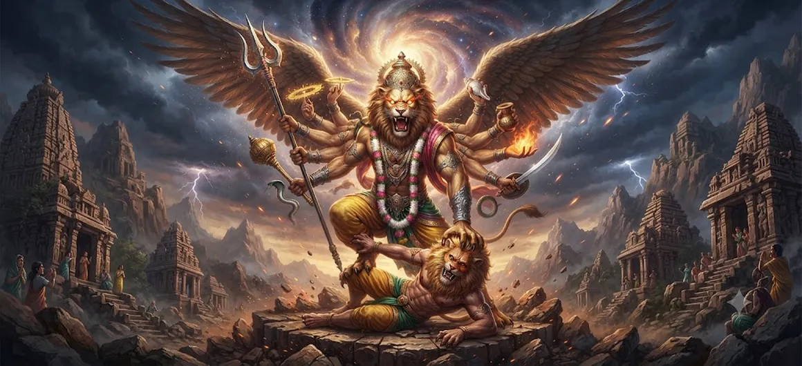

The Incarnation of Sharabha
Chapter 12 of the Shatarudra Samhita presents the sacred manifestation of Sharabha, an extraordinary form associated with Lord Shiva. The preceding chapter prepared the narrative by establishing the circumstances that lead toward this remarkable divine appearance.
Sharabha represents an extraordinary expression of divine power. His manifestation is presented within the sacred narrative as a response to an exceptional circumstance, demonstrating that the Divine can assume forms appropriate to the needs of cosmic order.
This chapter therefore stands as an important account of Shiva's transformative power, the mystery of divine manifestations, and the restoration of balance through extraordinary means.
Chapter 12 Highlights
Manifestation of Sharabha
Describes the extraordinary manifestation of Sharabha as a divine form associated with Lord Shiva.
Extraordinary Divine Power
Reveals a powerful manifestation arising in response to an exceptional cosmic circumstance.
Connection with Narasimha
Continues the sacred narrative that follows the extraordinary manifestation of Narasimha.
Protection of Cosmic Order
Connects divine intervention with the preservation of sacred balance and order.
Transformative Force
Presents divine power as a force capable of transforming extraordinary circumstances.
Glory of Lord Shiva
Highlights the limitless and mysterious nature of Shiva's divine manifestations.
Core Topics in This Chapter
- 01 The Circumstances Leading to Sharabha →
- 02 The Divine Manifestation of Sharabha →
- 03 The Extraordinary Form of Sharabha →
- 04 The Power of the Sharabha Manifestation →
- 05 The Purpose of the Incarnation →
- 06 Restoration of Cosmic Order →
- 07 The Glory of Shiva's Transformative Power →
- 08 Spiritual Significance of Sharabha →
- 09 The Mystery of Divine Forms →
- 10 Transition to the Incarnation of Grihapati →
The Circumstances Leading to Sharabha
The preceding chapter established the circumstances that prepare the way for the manifestation of Sharabha. The sacred narrative now moves from the prologue into the actual revelation of this extraordinary form of divine power.
The manifestation is not presented as an ordinary event. It arises in a setting where an extraordinary divine response is required. The chapter therefore continues the larger theme of Shiva assuming appropriate forms according to the needs of cosmic order.
The Divine Manifestation of Sharabha
Sharabha appears as an extraordinary manifestation of Lord Shiva. The sacred tradition associates this form with immense strength, unusual characteristics, and a divine purpose beyond ordinary understanding.
The manifestation demonstrates that divine power is not restricted to a single visible pattern. Shiva's greatness includes the ability to assume whatever form is required for a sacred purpose.
The Extraordinary Form of Sharabha
Sharabha is described through an extraordinary combination of powerful and awe-inspiring characteristics. The unusual nature of the form reflects the extraordinary circumstances in which the manifestation takes place.
Such a form should not be understood merely through physical imagery. Within the sacred narrative, the form represents a concentration of divine power directed toward a specific spiritual and cosmic purpose.
The Power of the Sharabha Manifestation
The Sharabha manifestation represents overwhelming divine strength. Its power is not merely physical. It symbolizes the capacity of divine consciousness to confront, contain, and transform extraordinary forces.
The chapter therefore places emphasis on power guided by divine purpose. Strength becomes sacred when it serves protection, balance, and restoration.
The Purpose of the Incarnation
The purpose of an incarnation in sacred literature is connected with the preservation of dharma and the restoration of harmony. The Sharabha manifestation is understood within this larger principle of divine intervention.
The form demonstrates that when circumstances become extraordinary, the response required to restore balance may also be extraordinary.
Restoration of Cosmic Order
The sacred order of existence depends upon the proper relationship between powerful forces. When that relationship becomes disturbed, divine intervention restores the necessary balance.
Sharabha therefore belongs to the larger sacred theme of protection and restoration. The manifestation represents the intervention of divine power when ordinary conditions can no longer maintain harmony.
The Glory of Shiva's Transformative Power
One of the defining qualities of Shiva is transformation. The Lord is associated with the dissolution of what has become destructive and the opening of a path toward renewal and higher order.
Sharabha reveals this transformative dimension in an especially powerful form. The manifestation reminds devotees that divine transformation may appear in ways that exceed ordinary expectations.
Spiritual Significance of Sharabha
The spiritual significance of Sharabha lies beyond the external description of the form. The manifestation can be contemplated as a symbol of divine strength brought under the direction of higher wisdom.
It also reminds seekers that overwhelming circumstances do not necessarily indicate the absence of divine order. Sometimes the restoration of harmony requires a form of divine intervention that is itself extraordinary.
The Mystery of Divine Forms
The Incarnation of Sharabha demonstrates the mystery and limitless nature of divine manifestation. Human beings naturally attempt to understand the Divine through familiar categories, but sacred narratives repeatedly show that divine reality cannot be confined to those categories.
Sharabha therefore becomes a reminder of the infinite possibilities of divine power and the importance of approaching sacred manifestations with humility and reverence.
Transition to the Incarnation of Grihapati
With the manifestation of Sharabha established, the sacred narrative is ready to move toward another divine incarnation. The following chapter introduces Grihapati, continuing the sequence of extraordinary manifestations described in the Shatarudra Samhita.
The transition from Sharabha to Grihapati also reminds the reader that the glory of Lord Shiva cannot be exhausted by a single manifestation. The Samhita continues to reveal different dimensions of the Divine through successive incarnations.
Key Teachings of Chapter 12
Divine Intervention
Extraordinary circumstances may call forth an extraordinary divine response.
Power Guided by Purpose
Divine strength becomes meaningful when directed toward protection and restoration.
Restoration of Balance
The Sharabha manifestation is connected with the preservation of cosmic harmony.
Transformation
Shiva's fierce manifestations reveal the transformative dimension of divine power.
Protection
Divine manifestations can serve the preservation of sacred order and protection.
Infinite Divine Glory
Shiva's manifestations reveal that divine reality cannot be confined to a single form.
Spiritual Reflection
The Incarnation of Sharabha invites us to contemplate the limitless nature of divine power. The sacred form appears extraordinary because the circumstances surrounding its manifestation are themselves extraordinary. The deeper lesson is not simply about a remarkable form, but about the relationship between power, wisdom, protection, and cosmic balance. Divine strength is meaningful when it serves a higher purpose. In our own lives, moments of intense difficulty may also require courage, discipline, wisdom, and transformation. The Sharabha narrative reminds devotees that what appears frightening or overwhelming need not be the final state of affairs. Through divine grace and purposeful action, disorder can move toward balance and difficulty can become the beginning of transformation.
Living the Message of Chapter 12
Applying the message of Sharabha in daily life begins with understanding the difference between uncontrolled force and purposeful strength. True strength is not simply the ability to overpower a difficulty. It is the ability to face difficulty without abandoning wisdom, discipline, compassion, and responsibility.
When confronted with anger, conflict, or uncertainty, remember that intensity must be guided by clarity. Respond firmly when necessary, but allow wisdom to determine the direction of that strength.
The chapter also encourages resilience. Extraordinary challenges may require extraordinary patience and transformation. Instead of seeing every difficult moment as defeat, view it as an opportunity to develop greater strength and spiritual maturity.
Key Spiritual Concepts
An extraordinary manifestation associated with Lord Shiva and presented as the central divine form of Chapter 12.
The appearance of divine power in a form appropriate to a particular sacred circumstance.
The limitless spiritual force through which the Divine protects, transforms, and restores order.
The harmonious condition of the forces sustaining sacred order.
The process through which difficult or destructive conditions are brought toward a new and harmonious state.
A purposeful manifestation of divine power in response to an extraordinary circumstance.
Chapter Summary
Shatarudra Samhita Chapter 12 presents the Incarnation of Sharabha, an extraordinary manifestation associated with Lord Shiva. Building upon the circumstances established in the preceding chapter, the narrative moves from the prologue into the actual manifestation of this powerful divine form. Sharabha represents the extraordinary nature of divine intervention when unusual circumstances require an equally extraordinary response. The chapter emphasizes the connection between divine strength, higher purpose, protection, transformation, and restoration of cosmic balance. The form of Sharabha should therefore be understood not merely through its awe-inspiring appearance but through the spiritual purpose represented by its manifestation. The chapter continues the larger revelation of Shiva's limitless glory and prepares the sacred narrative for the next divine manifestation, The Incarnation of Grihapati.
Frequently Asked Questions
① What is the subject of Shatarudra Samhita Chapter 12?
Chapter 12 describes the Incarnation of Sharabha, an extraordinary manifestation associated with Lord Shiva.
② Who is Sharabha?
Sharabha is an extraordinary and powerful manifestation associated with Lord Shiva in Shaiva sacred tradition.
③ Why does Lord Shiva manifest as Sharabha?
The manifestation is presented as a divine response to extraordinary circumstances and as part of the restoration of cosmic balance.
④ How is Sharabha connected with Narasimha?
The Sharabha narrative follows the preceding account of Narasimha and continues the sacred sequence of extraordinary divine manifestations.
⑤ What is the spiritual significance of Sharabha?
Sharabha represents divine strength, protection, transformation, control of overwhelming forces, and restoration of sacred order.
⑥ What chapter comes after The Incarnation of Sharabha?
The next chapter is The Incarnation of Grihapati.
“When divine purpose calls, the Supreme Lord manifests the power required to restore balance and protect the sacred order.”
Continue Through Shatarudra Samhita
Chapter 12 reveals the extraordinary manifestation of Sharabha. Continue to the next chapter to explore The Incarnation of Grihapati.